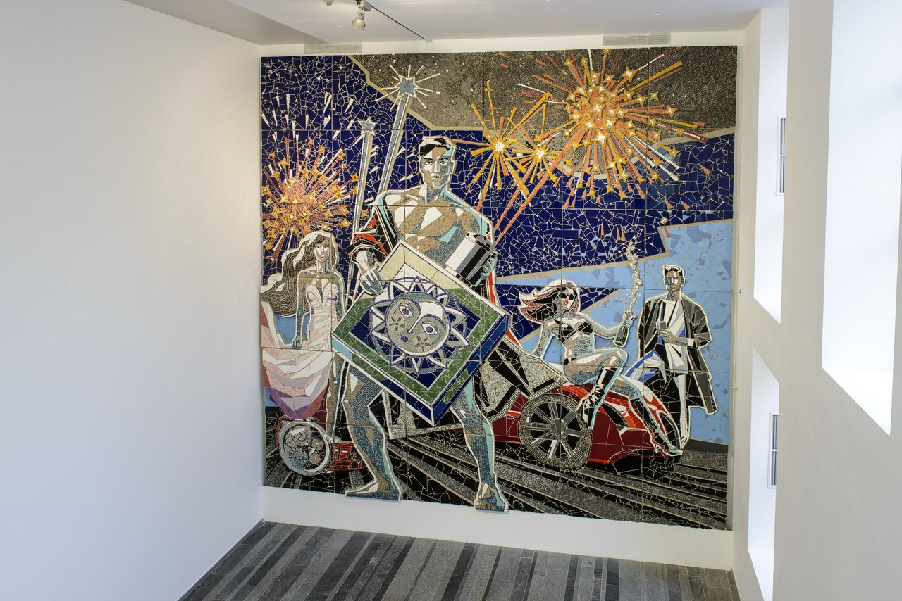
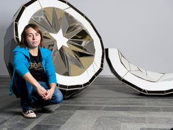
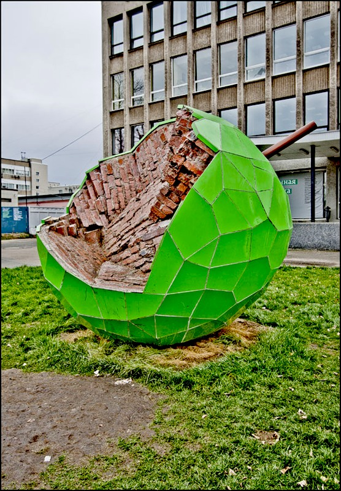
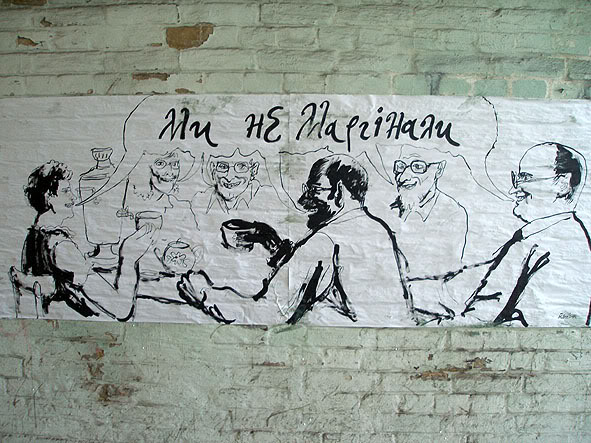
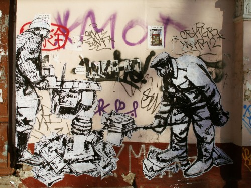
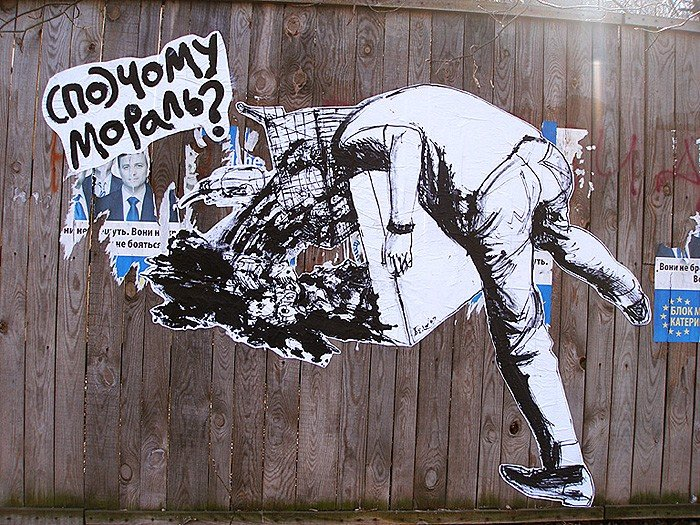

Стріт-арт
Майстри стріт-арту в Україні
Жанна Кадирова
Народилася в 1981 році в м. Бровари Київської області. У 1999 році закінчила відділення скульптури Київської державної художньої середньої школи ім. Т.Г. Шевченка.
За підсумками виставки 20-ти номінантів Премії PinchukArtCentre 2011, отримала першу спеціальну премію за проект «Асфальт». У квітні 2012 була удостоєна премії Сергія Курьохіна в області сучасного мистецтва в номінації Мистецтво в суспільному просторi за роботу «Форма світла».
|  |  |  |
Експериментами зі скульптурою в публічному просторі художниця займається кілька років. Її найсвіжіша ідея - ліхтар з променем світла з бетону. «На що то нематеріальне начебто променя світла звертають увагу, тільки якщо його максимально матеріалізувати», - говорить Кадирова. Ліхтар з бетонним променем світла вона поставила б поруч із звичайними. На думку художниці, побачивши таку алею, перехожі задумалися б і про інших малопомітних, але важливих речах повсякденного життя.
«Є у мене ідея. Бачиш, здоровенна стічна труба, її б де небудь на крутому березі річки поставити, - показує зроблений фломастерами начерк художниця Жанна Кадирова. - Біля могили Шевченка у Каневі? Так, там було б добре, люди пропливали б на пароплавах повз пам'ятник і боялися, що їх засмокче в трубу» . Ця та ще кілька ідей художниці, швидше за все, так і залишаться в начерках. Монументальна скульптура, яка повинна бути вписана в пейзаж, - жанр трудомісткий, дорогий і вимагає спеціальних дозволів від влади. Найсприятливіше середовище для цього виду вуличного мистецтва - великі фестивалі на кшталт «Арт- Шаргородa», з якого в 2006 році почався розвиток українського стріт-арту, або «ГогольФесту», де художникам віддали всю територію київської кіностудії ім. Довженка.
Для ярмарку сучасного мистецтва «Арт-Київ» художниця Жанна Кадирова перетворила дорожні знаки, вирізавши в кожній табличці двері.
Анатолій Бєлов
Анатолій Бєлов народився в 1977 році в Києві, де живе і працює зараз. Отримав дипломи Державної художньої школи ім. Тараса Шевченка та Національного технічного університету України. Був членом мистецької групи Emblika Quali. Бєлов брав участь у резиденціях Центру сучасного мистецтва Джоржда Сороса в Києві (2005) та Асоціації сучасного мистецтва Rotor у Ґраці (2009).
"Вулиця тим і крута, що висловитися може кожен і цензорів немає", – резюмує художник.
Чотири роки тому Бєлов, бажаючи вийти за рамки тісного галерейного формату, розклеїв по Києву свою першу серію вуличної графіки Ми не маргінали, у якій зобразив себе і своїх колег по цеху.
З того часу він регулярно розбурхує столицю стріт-арт-проектами на гострі теми. Так, його серія "По чому мораль?" 2009 року, де головними персонажами були люди зі споживчими кошиками замість голів, стала відповіддю на прийняття Верховною Радою Закону про захист суспільної моралі.
А героїв свого проекту "Баланс" (2010p) Бєлов помістив на верхівки хитких безглуздих пірамід з накопичених матеріальних цінностей. "Вулиця своєю формою, структурою, контекстом, атмосферою змінює малюнок, вдихає в нього життя, і якщо раптом з'являється щось дійсно цікаве – відбувається вибух", – пояснює художник механізм дії стріт-арту.
|  |  |  |
Через свої малюнки та картини Анатолій Бєлов відкриває нецензуровану свободу фікційного та автобіографічного наративів, розвиваючи світ тонкої душі. Використовуючи мистецтво як зброю для особистої боротьби, Бєлов, як загублений романтик, мріє про свободу та любов.
Вперед Назад / Вгору